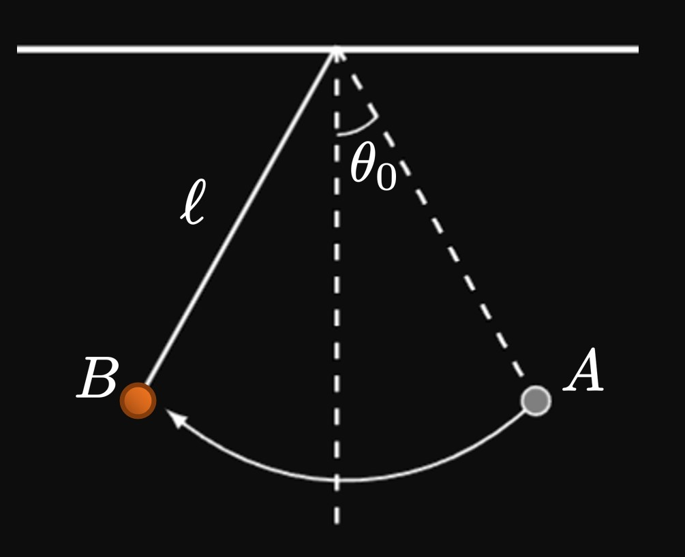
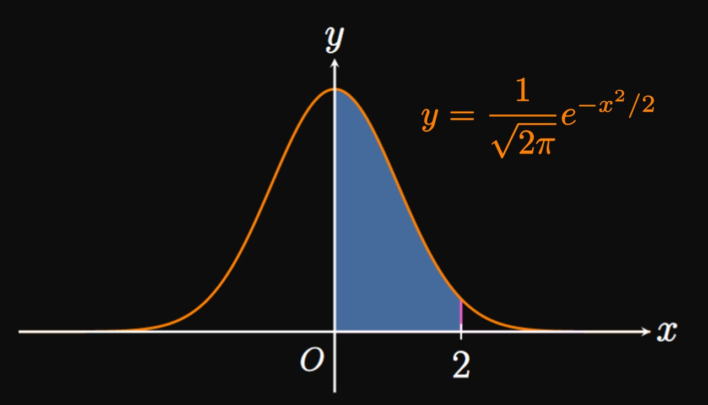
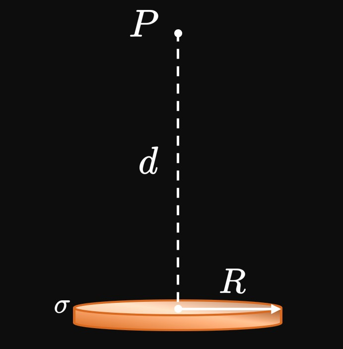

The following table shows derivatives of the function \(f\)
at \(3.\)
If \(f(3) = 4,\)
then write the fourth-degree Taylor polynomial for \(f\) centered at \(a = 3.\)
A function \(g\) is increasing and concave down at \(2.\)
Which polynomial could be the second-degree Taylor series of \(g\)
centered at \(a = 2 \ques\)
\(\ds 4 + 7x - 8x^2 + \cdots\)
\(\ds 4 - 7x + 8x^2 + \cdots\)
\(\ds 4 + 7(x - 2) - 8(x - 2)^2 + \cdots\)
\(\ds 4 + 7(x - 2) + 8(x - 2)^2 + \cdots\)
For each of exercises 5–8, using a Taylor polynomial of the given degree, approximate
the expression to three decimal places.
The function \(g\) is defined by the following Taylor series centered at \(a = 4 \col\)
\[g(x) = \sum_{n = 1}^\infty \frac{(-1)^n}{n^3} (x - 4)^n \pd\]
Calculate \(g^{(4)}(4).\)
Let function \(g\) have the following Taylor series centered at \(a = 7 \col\)
\[g(x) = \sum_{n = 0}^\infty \frac{(-1)^{n + 1}}{e^n} (x - 7)^n \pd\]
Calculate \(g^{(5)}(7).\)

An object hanging from a string of length \(\ell\) is extended to point \(A,\)
at an angle \(\theta_0\) to the vertical.
The object then swings to point \(B\) and then back to \(A,\)
repeating this trajectory in a periodic motion.
(See Figure 4.)
Using Newton's Second Law in rotational form,
the angle \(\theta\) from the vertical at any time \(t\) satisfies the second-order differential equation
\[\derivOrder{\theta}{t}{2} + \frac{g}{\ell} \sin \theta = 0 \cma\]
where \(g\) is the acceleration due to gravity.
Because this differential equation cannot be solved using elementary functions,
we use the small-angle approximation by replacing \(\sin \theta\) with its first-degree Maclaurin polynomial to get
\[\derivOrder{\theta}{t}{2} + \frac{g}{\ell} \theta = 0 \pd\]
This equation holds when \(\theta_0\) is small.
The object's trajectory should follow a sinusoidal function;
indeed, the particular solution to the simplified differential equation
is \(\theta(t) = \theta_0 \cos \par{t\sqrt{g/\ell}}.\)
Verify this fact.
Using a graphing utility,
determine the interval of angles \(\theta\) (in degrees)
for which the approximation \(\sin \theta \approx \theta\) has an error of less than \(1\%.\)
When \(\theta_0 = 45 \degree,\) calculate \(\textderivOrder{\theta}{t}{2}.\)
Then calculate \(\textderivOrder{\theta}{t}{2}\) using the small-angle approximation
and determine its percent error.
At some instant, a car's speed is \(30\) feet per second and its acceleration
is \(4\) feet per second squared.
Using a second-degree Maclaurin polynomial,
approximate how far the car travels within the next second.
In a circuit with a battery, resistor, inductor, and capacitor,
let \(I\) be current and \(Q\) be the charge on one plate of the capacitor
(Figure 5).
The current is the time derivative of charge; that is, \(I = \textderiv{Q}{t}.\)
One second after the circuit is connected, the current is \(2\) amps
and is increasing at a rate of \(0.2\) amp per second, and
the charge on the capacitor is \(0.05\) coulomb.
Use a Taylor series centered at \(t = 1\) to approximate the charge on the capacitor's plate
\(1.1\) seconds after the circuit has been connected.
Let \(\sigma_X\) and \(\sigma_Y\) be the standard deviations, respectively, of the random variables \(X\) and \(Y.\)
The standard deviation of the sum \(X + Y\) or difference \(X - Y\) is given by
\[\sigma_{X \pm Y} = \sqrt{\sigma_X^2 + \sigma_Y^2} \pd\]
If \(\sigma_X \gt \sigma_Y,\) then find a Maclaurin series expansion for \(\sigma_{X \pm Y}.\)

By using a seventh-degree Maclaurin polynomial, calculate the area under the curve
\[y = \frac{1}{\sqrt{2 \pi}} e^{-x^2/2}\]
from \(x = 0\) to \(x = 2.\)
(This area is the probability that a random variable falls between \(0\) and \(2\) standard deviations from the mean
of \(0.\)
See Figure 6.)

A uniformly charged disk has a radius of \(R\) and a surface charge density of \(\sigma.\)
Point \(P\) lies a distance \(d\) along the disk's perpendicular central axis.
(See Figure 7.)
The electric potential \(V\)—the electric field per unit charge—at \(P\) is given by
\[V = 2 \pi k_C \sigma \par{\sqrt{d^2 + R^2} - d} \cma\]
where \(k_C\) is Coulomb's constant.
For large \(d,\) show that
\[V \approx \frac{\pi k_C \sigma R^2}{d} \pd\]
For the Taylor approximation \(T_N(x),\)
which statement is true about Taylor's Remainder Theorem?
Taylor's Remainder Theorem allows us to calculate
the exact error of \(T_N(x).\)
Taylor's Remainder Theorem bounds the remainder of \(T_N(x)\)
by the magnitude of the first omitted term of the Taylor approximation,
that is, the \((N + 1)\)st term.
Taylor's Remainder Theorem gives a value greater than or equal to the true error in \(T_N(x).\)
Taylor's Remainder Theorem is only applicable for non-alternating series.
Let \(f\) be a function that has derivatives of all orders and satisfies \(f(1) = 4.\)
The given table provides values of \(f^{(n)}(1)\) for selected \(n.\)
\(n\)
\(1\)
\(2\)
\(3\)
\(4\)
\(f^{(n)}(1)\)
\(-2\)
\(16\)
\(3\)
\(-1\)
It is known that \(\abs{f^{(5)}(x)} \leq 50\) for all \(1 \leq x \leq 1.2.\)
Write a fourth-degree Taylor series for \(f(x)\) centered at \(x = 1,\)
and use it to estimate \(f(1.2).\)
Use Taylor's Remainder Theorem to bound the error to your approximation in part (a).
Construct an interval in which the value of \(f(1.2)\) must reside.
The fourth-degree Maclaurin series for \(\cos x\) is
\[T_4(x) = 1 - \frac{x^2}{2} + \frac{x^4}{4!} \pd\]
Using Taylor's Remainder Theorem, find a value \(K\) such that
\(\abs{\cos 0.7 - T_4(0.7)} \leq K.\)
Prove that the Maclaurin series
\[1 - \frac{x^2}{2!} + \frac{x^4}{4!} - \frac{x^6}{6!} + \cdots + \frac{(-1)^n \, x^{2n}}{(2n)!} + \cdots\]
converges to \(\cos x\) for all \(x.\)
Prove that the Maclaurin series
\[x - \frac{x^2}{2} + \frac{x^3}{3} - \frac{x^4}{4} + \cdots + \frac{(-1)^{n + 1} \, x^n}{n} + \cdots\]
converges to \(\ln(1 + x)\) for \(0 \leq x \leq 1.\)
(The full interval of convergence is \(-1 \lt x \leq 1,\)
but it is difficult to prove convergence for \(-1 \lt x \leq 0.\))